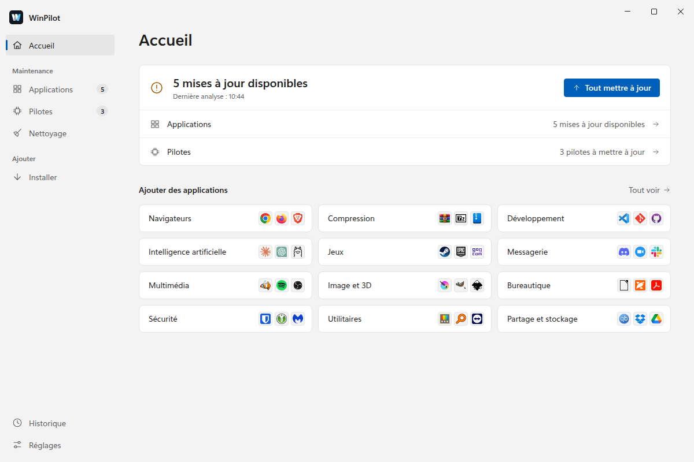
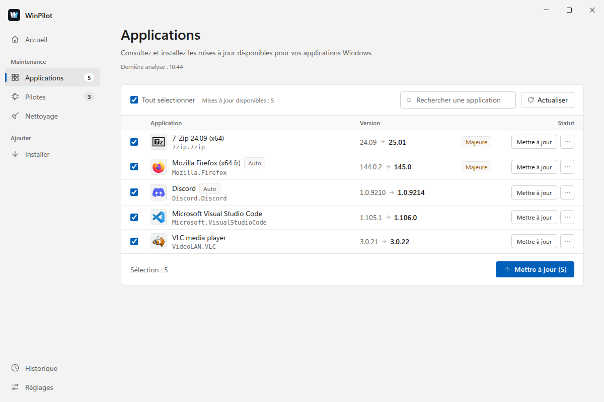
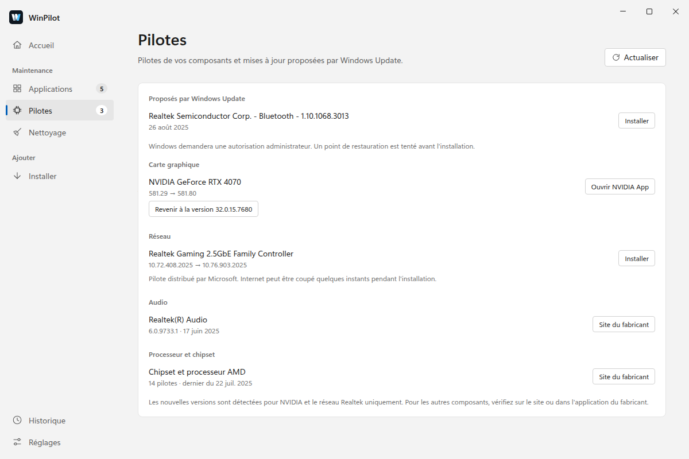
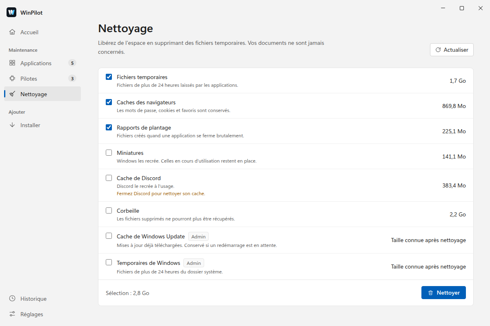
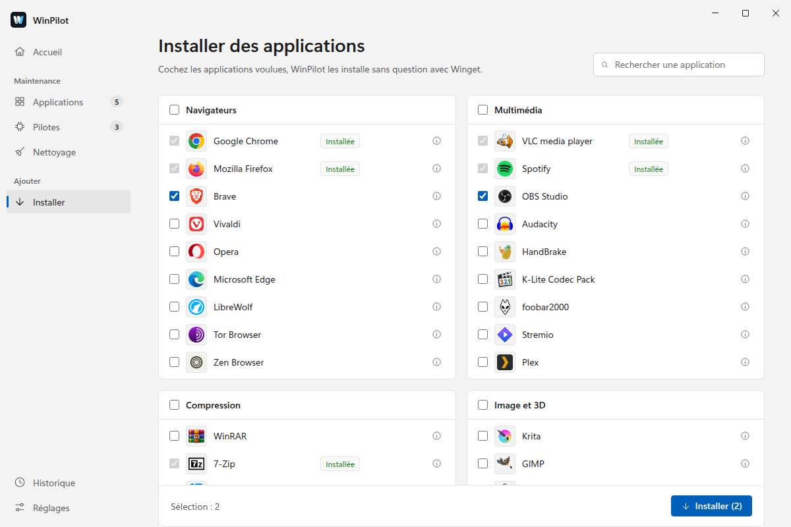
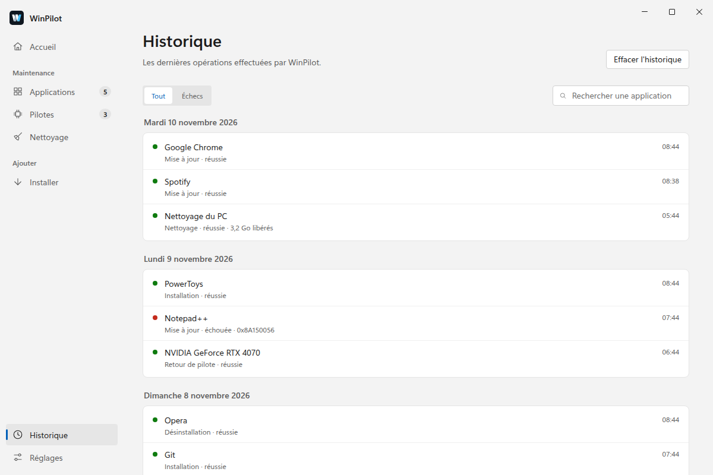

Votre PC Windows,
toujours à jour.
WinPilot met à jour vos applications avec winget, surveille vos pilotes et libère de l'espace disque. Sans ligne de commande.

Tout l'entretien du PC au même endroit
Applications, pilotes et espace disque : WinPilot vous montre ce qui peut être fait, et c'est vous qui validez.
Applications à jour
Voyez ce qui a une nouvelle version, lisez les notes de version, puis mettez tout à jour ou seulement ce que vous cochez. Les versions majeures sont signalées.
Pilotes
WinPilot liste les pilotes de vos composants et ceux que propose Windows Update. Un point de restauration est tenté avant chaque installation, et vous pouvez revenir à la version précédente.
Nettoyage prudent
Fichiers temporaires, caches des navigateurs, rapports de plantage, corbeille : vous voyez la place gagnée avant de confirmer. Vos documents ne sont jamais concernés.
99 applications à portée de clic
Un catalogue en 12 catégories : cochez, WinPilot installe à la suite. La recherche winget trouve le reste.
Mises à jour automatiques
Dans la zone de notification, WinPilot vérifie toutes les 6 heures. Les applications que vous approuvez se mettent à jour seules, sur secteur et hors versions majeures.
Sans compte, sans télémétrie
Pas d'inscription, aucune statistique envoyée. L'interface suit le thème et la couleur d'accent de Windows, en français ou en anglais.
Aperçu de l'application
Une barre latérale, un onglet par tâche, et le style de Windows 11 en clair comme en sombre.
Cochez, lancez, c'est fait
La version installée, la nouvelle, et les changements majeurs signalés.
- Ignorez une application, ou seulement une version.
- Un échec propose de réessayer en administrateur.

Vos composants en un coup d'œil
Carte graphique, réseau, audio et chipset, avec les pilotes proposés par Windows Update.
- Nouvelles versions détectées pour NVIDIA et le réseau Realtek.
- Retour au pilote précédent quand Windows le conserve.

De la place, sans risque
Chaque catégorie affiche sa taille. Les éléments recommandés sont cochés d'avance, les autres attendent votre choix.
- Les fichiers récents ou utilisés restent en place.
- La corbeille n'est vidée qu'après confirmation.

Un nouveau PC prêt en quelques minutes
Cochez les applications voulues : WinPilot les installe à la suite, sans question. Celles déjà présentes sont repérées.

Tout reste consultable
Mises à jour, installations, désinstallations, pilotes et nettoyages, classés par jour. Un filtre isole les échecs.

Captures réalisées avec des données d'exemple.
Télécharger WinPilot
Télécharger l'installeur- Lancez le fichier WinPilot-Setup téléchargé.
- Suivez l'installeur.
- WinPilot analyse vos applications et vos pilotes. Ses nouvelles versions se proposent ensuite toutes seules.
L'installeur n'est pas signé : Windows SmartScreen peut afficher un avertissement. Cliquez alors sur Informations complémentaires, puis sur Exécuter quand même.